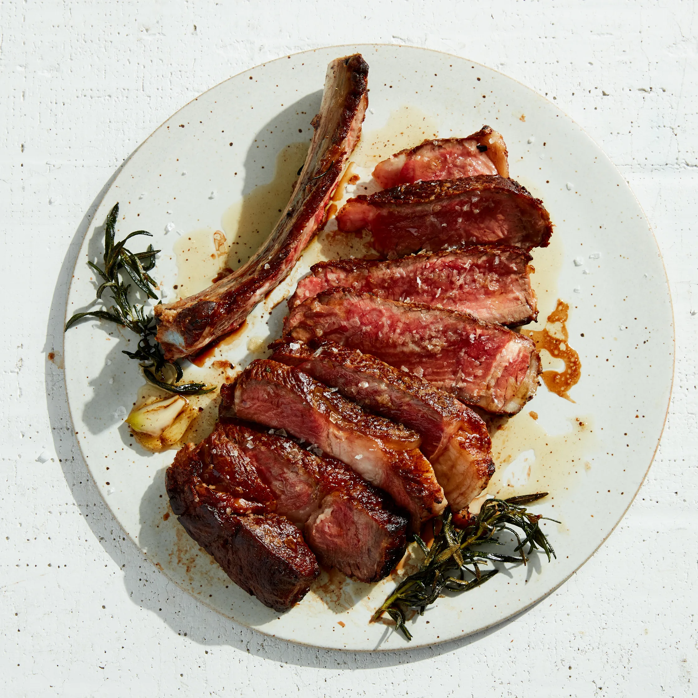

Butter Basted Steak

A perfect medium-rare steak, basted with butter infused with garlic and herbs
A healthy dinner meal
Ingredients & Equipment
- 1¾" steak of your choice
- 2tps of any high smoke point oil
- kosher salt
- freshly ground black pepper
- unsalted butter 3tbs
- 2 garlic cloves smushed
- 2 sprigs of rosemary
- stainless steel or cast iron pan
- tongs
instructions
- Season steak generously with kosher salt and pepper and let sit at room temperature 1 hour.
- Heat a dry large skillet, preferably cast iron, over medium-high, then add oil. As soon as oil is smoking, cook steak, turning every 2 minutes or so, until a deep brown crust forms and the internal temperature is a few degrees below 120°–125° for medium-rare(If you do not like steak medium rare grow up)
- Add butter, rosemary, and garlic to skillet, tilt pan toward you so that butter pools on one side, and use a large spoon to continually baste steak with butter. Continue until butter is no longer bubbling and it smells nutty and is beginning to brown, about 1 minute. Transfer meat to a cutting board and let rest 10 minutes.
- Cut meat from bone and slice against the grain 1" thick. Spoon some infused brown butter over steak and enjoy!